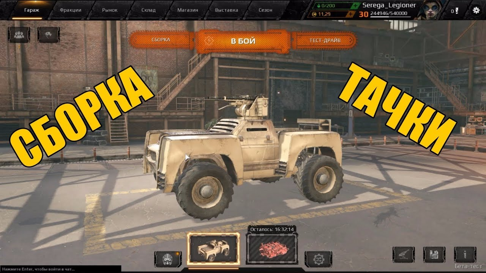
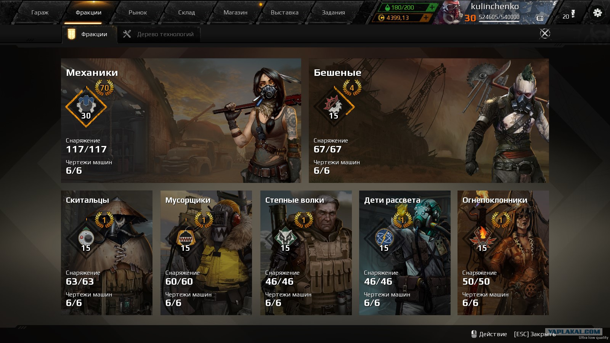
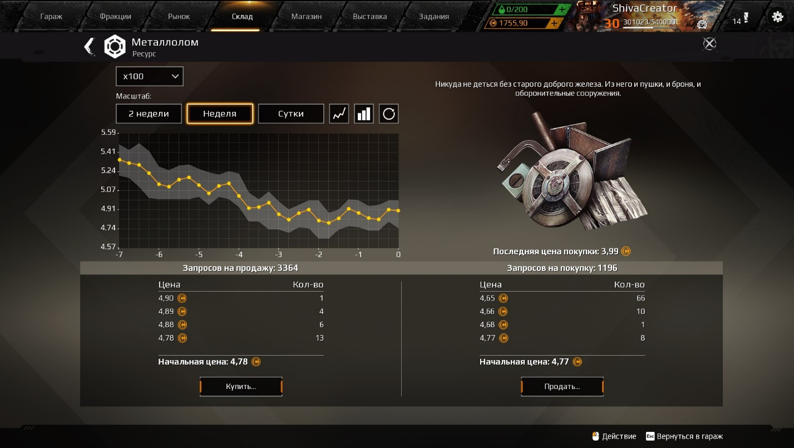
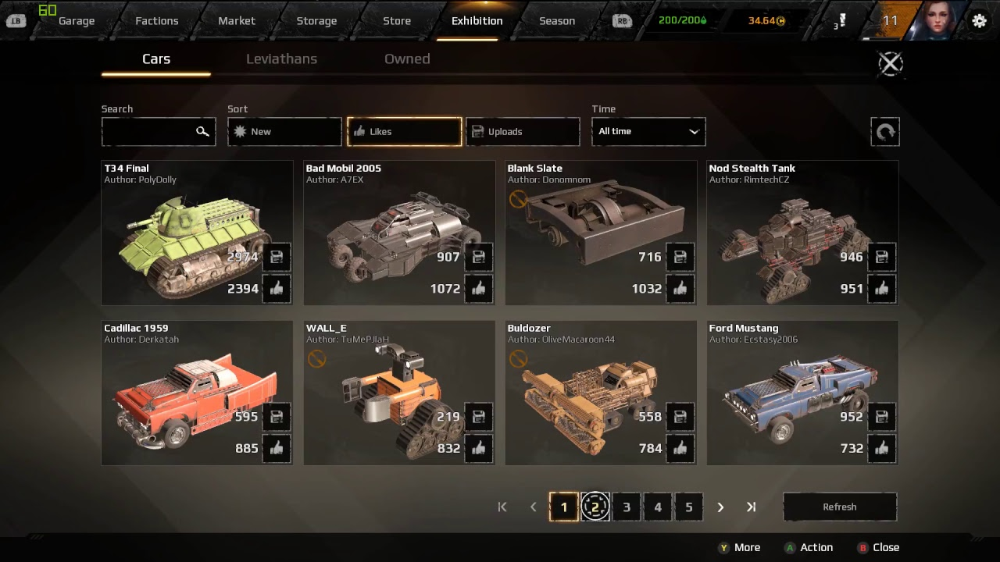
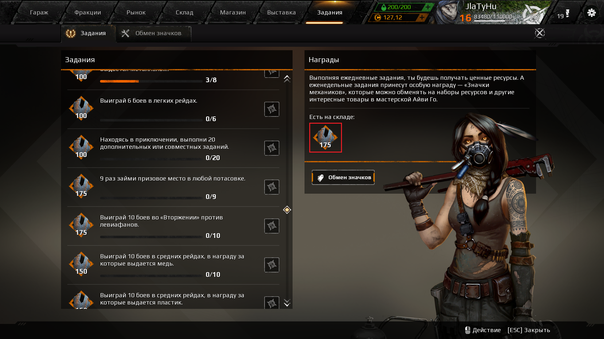

вкладка гараж
это дом игрока, где он может создать свой собственный шедевральный автомобиль
вкладка Фракции
Игрок начинает игру во фракции «Механики», а после достижения 10-го уровня репутации может присоединиться к одной из шести основных фракций. Переключение между фракциями возможно в любой момент. Чтобы вступить во фракцию, выживший должен заслужить доверие. В мире постапокалипсиса это можно сделать только в бою. Каждая фракция предоставляет несколько чертежей фракционных машин, а также открывает бонусы к различным частям транспортного средства, увеличение размера склада и так далее.
вкладка Рынок
это не магазин игры, а площадка для торговли между игроками.Товары (детали и ресурсы) на рынке выставляют сами игроки и цену на них устанавливают сами игроки. Как вы знаете, игроки в проекте могут собрать бронемобиль мечты произвольной конструкции, используя для этого детали, которые можно получить в качестве награды за бои или создать самому, используя возможности Фракций.
вкладка Выставка
место где есть уникальные машины, созданные самими игроками из доступных частей — от маневренных багги и парящих в небе бронелётов до тяжелых вездеходов на гусеничном ходу и боевых платформ на антигравитационной основе
вкладка Задания
За выполнение первых игрок получает металлолом. За выполнение вторых — особый ресурс (значки Механиков), который можно обменять и получить уникальные предметы. Кроме того, в игре есть система «достижений», за которые игрок получает уникальные фоны и эмблемы баннеров — элементы персонализации профиля.
